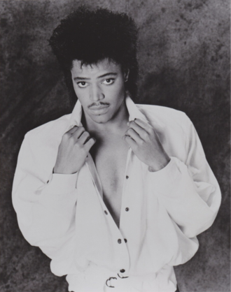

Rockwell
Kennedy William Gordy, known professionally as Rockwell, is an American musician. He is best known for his hit single "Somebody's Watching Me", which features an uncredited Michael Jackson on chorus vocals. Gordy is the son of Motown founder Berry Gordy. Other relatives include half-siblings Redfoo, Rhonda Ross Kendrick and nephew Sky Blu.
Complete Discography & Tracklists (23)
2010 The Stowaway EP 🎵 4 Tracks
2010 DJ Friendly Unit Shifter / Fakin' Jacks 🎵 0 Tracks
No tracks registered.
2010 Full Circle / My War 🎵 0 Tracks
No tracks registered.
2012 Childhood Memories 🎵 5 Tracks
2015 Obsolete Medium 🎵 15 Tracks
2016 Chorus of Disapproval 🎵 4 Tracks
2018 CONTENT EP 🎵 4 Tracks
2018 User - EP 🎵 0 Tracks
No tracks registered.